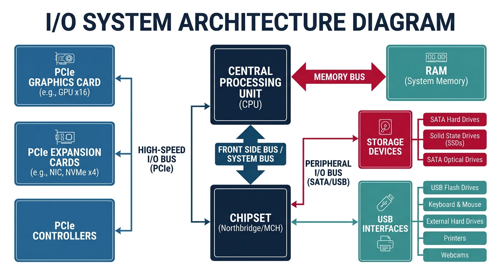
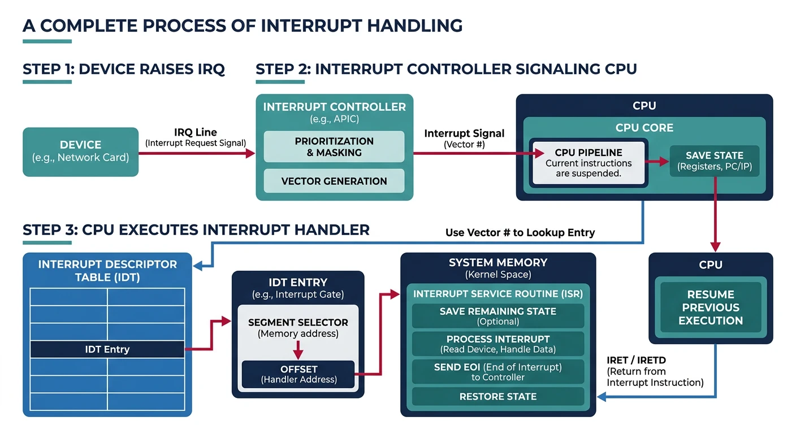
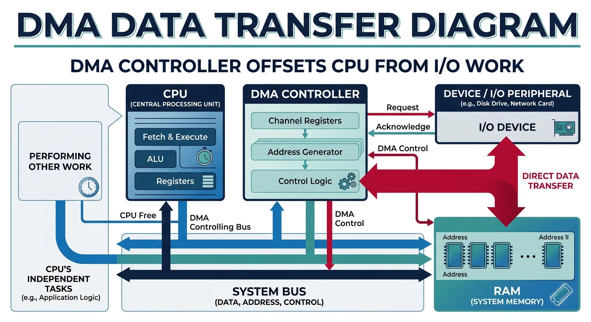
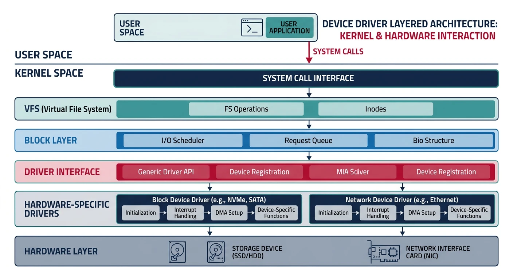
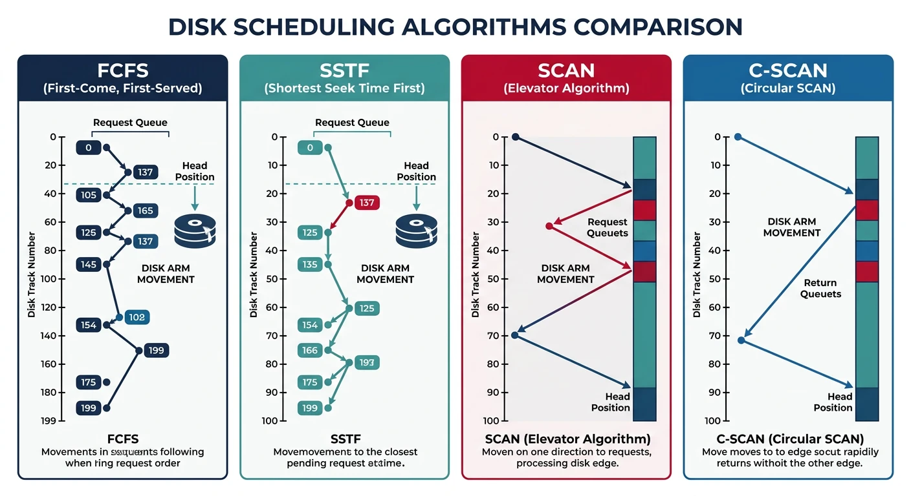

I/O systems form the bridge between software and hardware. Understanding how the OS manages devices is crucial for system programming and performance optimization.
Series Context: This is Part 18 of 24 in the Computer Architecture & Operating Systems Mastery series. Building on file systems, we explore hardware communication.
The Speed Gap Problem: CPUs operate at GHz speeds, but I/O devices range from slow keyboards to fast NVMe SSDs. How does the OS bridge this massive speed difference efficiently?
I/O Hardware
I/O devices communicate with the CPU through controllers, buses, and ports.

I/O hardware stack: CPU communicates with devices through the chipset (PCH), which manages PCIe, SATA, and USB controllers
I/O System Architecture
I/O Hardware Stack:
══════════════════════════════════════════════════════════════
┌─────────┐
│ CPU │
└────┬────┘
│
▼
┌────────────────────────────────────────────────┐
│ Memory Bus (FSB/QPI) │
└──────────────────┬─────────────────────────────┘
│
┌─────────────┴─────────────┐
▼ ▼
┌─────────┐ ┌───────────────┐
│ RAM │ │ Chipset/PCH │
└─────────┘ └───────┬───────┘
│
┌──────────────────┼──────────────────┐
│ │ │
▼ ▼ ▼
┌─────────┐ ┌─────────┐ ┌─────────┐
│PCIe x16 │ │ SATA │ │ USB │
│ (GPU) │ │ │ │ │
└─────────┘ └─────────┘ └─────────┘
Device Communication:
━━━━━━━━━━━━━━━━━━━━━━━━━━━━━━━━━━━━━━━━━━━━━━━━━━━━━━━━━━━━
1. PORT-MAPPED I/O (x86)
• Separate I/O address space
• Special instructions: IN, OUT
• Example: in al, 0x60 ; read keyboard
2. MEMORY-MAPPED I/O (modern)
• Device registers mapped to memory addresses
• Use regular MOV instructions
• Example: GPU framebuffer at 0xA0000
Interrupts
Interrupts allow devices to signal the CPU asynchronously, avoiding wasteful polling.

Interrupt handling flow: a device raises an IRQ, the APIC signals the CPU, which looks up the handler in the IDT and executes it
Polling vs Interrupts:
══════════════════════════════════════════════════════════════
POLLING (Busy Waiting):
while (device_status != READY) {
// CPU spinning, wasting cycles!
}
read_data();
✗ Wastes CPU time
✗ Can't do other work while waiting
✓ Low latency for high-speed devices
INTERRUPTS:
1. CPU executes other work
2. Device raises interrupt signal (IRQ)
3. CPU saves state, jumps to handler
4. Handler processes device, returns
5. CPU resumes previous work
✓ CPU free to do other work
✓ Efficient for slow devices
✗ Context switch overhead
Interrupt Handling Steps:
━━━━━━━━━━━━━━━━━━━━━━━━━━━━━━━━━━━━━━━━━━━━━━━━━━━━━━━━━━━━
1. Device asserts interrupt line
2. Interrupt controller (APIC) signals CPU
3. CPU finishes current instruction
4. CPU pushes flags, CS, IP to stack
5. CPU looks up handler in IDT (Interrupt Descriptor Table)
6. Jump to interrupt handler
7. Handler:
a. Save registers
b. Service the device
c. Acknowledge interrupt to controller
d. Restore registers
8. IRET - return from interrupt
DMA allows devices to transfer data directly to/from memory without CPU involvement.

DMA transfer: the DMA controller moves data directly between device and RAM, freeing the CPU to execute other instructions
DMA Operation
Without DMA (Programmed I/O):
══════════════════════════════════════════════════════════════
for each byte:
1. CPU reads byte from device
2. CPU writes byte to memory
4KB transfer = 4096 CPU read/write cycles!
With DMA:
══════════════════════════════════════════════════════════════
1. CPU programs DMA controller:
- Source address
- Destination address (memory buffer)
- Transfer count
- Direction (read/write)
2. DMA controller takes over bus:
- Device ↔ DMA ↔ Memory
- CPU is FREE during transfer!
3. DMA raises interrupt when complete
4. CPU processes data
┌─────────┐ ┌─────────┐
│ CPU │ (CPU does other work) │ RAM │
└─────────┘ └────┬────┘
│
┌──────────────┐ │
│ DMA │ ────────────┘
│ Controller │ (direct transfer)
└──────┬───────┘
│
┌──────┴───────┐
│ Device │
└──────────────┘
DMA Buffers: Memory for DMA must be physically contiguous and "pinned" (not swappable). The kernel provides special allocation functions like dma_alloc_coherent().
Device Drivers
Device drivers are kernel modules that know how to communicate with specific hardware.

Device driver architecture: drivers sit between the kernel core and hardware, translating generic I/O requests into device-specific commands
Unix categorizes devices into block and character devices based on data access patterns.
Device Types:
══════════════════════════════════════════════════════════════
BLOCK DEVICES:
• Data accessed in fixed-size blocks (512B, 4KB)
• Random access supported (seek)
• Usually buffered through block layer
• Examples: hard drives, SSDs, USB drives
$ ls -l /dev/sda
brw-rw---- 1 root disk 8, 0 Jan 15 10:00 /dev/sda
↑
b = block device
CHARACTER DEVICES:
• Data accessed as stream of bytes
• Usually sequential access only
• No buffering (direct to/from device)
• Examples: terminals, keyboards, serial ports
$ ls -l /dev/tty
crw-rw-rw- 1 root tty 5, 0 Jan 15 10:00 /dev/tty
↑
c = character device
Special Devices:
━━━━━━━━━━━━━━━━━━━━━━━━━━━━━━━━━━━━━━━━━━━━━━━━━━━━━━━━━━━━
/dev/null - Discards all writes, EOF on read
/dev/zero - Infinite stream of zeros
/dev/random - Random bytes (may block)
/dev/urandom- Random bytes (never blocks)
Disk Structure
Understanding disk geometry is essential for disk scheduling algorithms.
Hard Disk Drive (HDD) Structure:
══════════════════════════════════════════════════════════════
Spindle
│
┌───────────┴───────────┐
│ ┌─────────────────┐ │
│ │ ┌───────────┐ │ │ ← Platters
│ │ │ Track │ │ │ (spinning disks)
│ │ │ [████] │ │ │ ← Sector
│ │ └───────────┘ │ │
│ └─────────────────┘ │
└───────────────────────┘
\_______________/
Actuator arm
with read/write
heads
Terminology:
• Platter: Spinning magnetic disk
• Track: Concentric circle on platter
• Sector: Smallest addressable unit (512B or 4KB)
• Cylinder: All tracks at same radius across platters
Access Time Components:
━━━━━━━━━━━━━━━━━━━━━━━━━━━━━━━━━━━━━━━━━━━━━━━━━━━━━━━━━━━━
1. Seek time: Move arm to correct track (~5-10 ms)
2. Rotational latency: Wait for sector (~4 ms @ 7200 RPM)
3. Transfer time: Read data (~0.01 ms per sector)
Total: ~10 ms per random access!
SSD: ~0.1 ms (no mechanical parts)
Disk Scheduling Algorithms
Disk scheduling reorders I/O requests to minimize seek time. Critical for HDD performance.

Disk scheduling algorithm comparison: FCFS shows erratic arm movement, SSTF minimizes local seeks, and SCAN/C-SCAN sweep uniformly across tracks
Scheduling Algorithms Comparison
Example: Head at track 50, Queue: [98, 37, 14, 122, 65, 67]
Disk tracks 0-199
1. FCFS (First-Come First-Served):
━━━━━━━━━━━━━━━━━━━━━━━━━━━━━━━━━━━━━━━━━━━━━━━━━━━━━━━━━━━━
Service in arrival order.
50→98→37→14→122→65→67
48 + 61 + 23 + 108 + 57 + 2 = 299 tracks
✓ Fair, no starvation
✗ Poor performance (wild arm movement)
2. SSTF (Shortest Seek Time First):
━━━━━━━━━━━━━━━━━━━━━━━━━━━━━━━━━━━━━━━━━━━━━━━━━━━━━━━━━━━━
Always go to nearest request.
50→65→67→37→14→98→122
15 + 2 + 30 + 23 + 84 + 24 = 178 tracks
✓ Better than FCFS
✗ Starvation possible (distant requests)
3. SCAN (Elevator):
━━━━━━━━━━━━━━━━━━━━━━━━━━━━━━━━━━━━━━━━━━━━━━━━━━━━━━━━━━━━
Move in one direction, service all, reverse.
50→65→67→98→122→(end)→37→14
15 + 2 + 31 + 24 + 77 + 85 + 23 = 157 tracks
✓ No starvation, fair
✓ Good throughput
4. C-SCAN (Circular SCAN):
━━━━━━━━━━━━━━━━━━━━━━━━━━━━━━━━━━━━━━━━━━━━━━━━━━━━━━━━━━━━
Only service in one direction, jump back.
50→65→67→98→122→(end)─jump→0→14→37
✓ More uniform wait time than SCAN
✓ No requests wait too long
SSDs Don't Need This! SSDs have no seek time (no mechanical parts), so disk scheduling is irrelevant. Modern Linux uses deadline or noop scheduler for SSDs.
I/O systems are the critical bridge between software and hardware. We've covered:
I/O Hardware: Controllers, buses, and port/memory-mapped I/O
Interrupts: Asynchronous device signaling
DMA: Direct memory transfers without CPU
Device Drivers: Kernel modules for hardware abstraction
Block vs Character: Two fundamental device types
Disk Structure: Platters, tracks, sectors, and access time
Disk Scheduling: FCFS, SSTF, SCAN, C-SCAN algorithms
Key Insight: The massive speed gap between CPUs and I/O devices drives all I/O system design—interrupts let CPUs do useful work, DMA offloads transfers, and scheduling minimizes mechanical delays.